Activity: Constructing a bracket
In this activity, construct a solid model and create holes, chamfer, and pattern features.
Objectives
In this activity you will construct a solid model and create holes, chamfer, and pattern features.
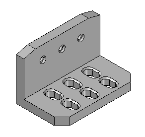
Create a new ISO Metric Part file.
Make sure you are in the ordered environment.
Create an L-shaped extrusion as the base feature. In subsequent steps, use additional features to create the final part.
Choose the Extrude command.
Turn on the display of the base reference planes.
Set the Create-from option to Coincident Plane, and select the reference plane shown.
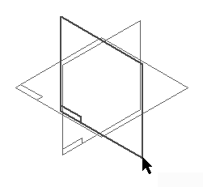
Hide all reference planes.
Draw the profile.
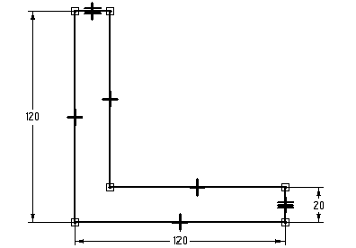
Use an Equal relationship, as shown above, to make the two shorter lines equal to one another.
Choose Close Sketch to complete the profile.
On command bar, click the Symmetric extent button. Type 200 in the Distance field and press Enter.
Fit the view.
Click Finish.
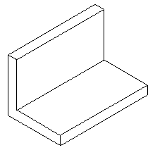
Add a chamfer treatment feature to the base feature.
In the Solids group, on the Round list, choose the Chamfer command.
Select the two short vertical edges on the front of the part as shown.
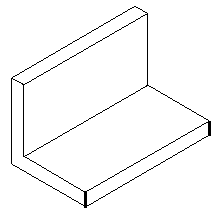
On the command bar, type 20 in the Setback field and click the Accept button.
Click Finish.
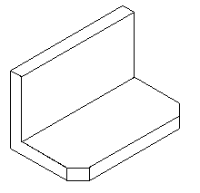
Change the chamfer option settings and add another set of chamfers with an angle and setback.
Choose the Chamfer command.
On command bar, click the Chamfer Options button. Click the Angle and setback option and then click OK.
Notice that after setting the Angle and setback option, the command bar changes to include the Select Face step.
Select the top face and then on the command bar click the Accept button.
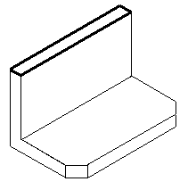
Select the short edge on each end of the top face.
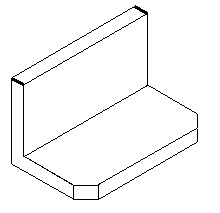
Type 30 in the Setback field and type 15 in the Angle field.
Click the Accept button to apply these values.
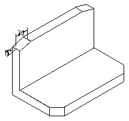
Click Finish.
Save the file as angle.par.
Construct a cutout on the front horizontal face shown.
Choose the Extrude command.
Select the horizontal face shown to define the reference plane.
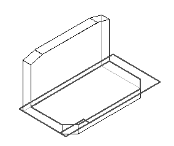
Draw the profile. Use the Line command and toggle between the Line and Arc modes.
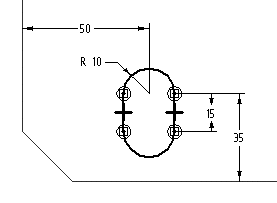
Choose Close Sketch.
On command bar, click the Through Next option, and position the cursor to project the cutout downward.
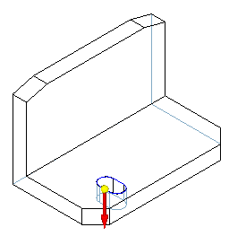
Click Finish.
Add a chamfer to the cutout constructed in the previous step.
Choose the Chamfer command.
On command bar, change the chamfer setting to Equal setbacks.
Select the top and bottom edges of the cutout.
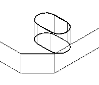
In the Setback box, type 3 and click the Accept button.
Click Finish.
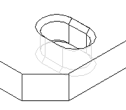
Pattern the cutout and chamfer. Since the cutout is the parent feature of the chamfer, the cutout must be patterned with the chamfer.
Choose the Pattern command and on the command bar, click the Smart option.
On PathFinder, select Cutout 1 and Chamfer 3 as the features to pattern. Click the Accept button.
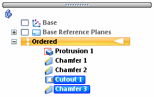
Select the reference plane to place the pattern on. Use the same profile plane that was used for the Cutout feature.
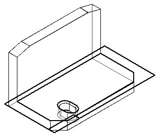
In the Features group, click the Rectangular Pattern command.
Set the Pattern Type to Fixed. Set the X count to 3 and the Y count to 2. Type 50 for the X spacing and 45 for the Y spacing. Press Enter.
Click the center of the arc in the bottom of the cutout to define the start point of the pattern profile (1), and then position the rectangle defining the pattern up and to the right (2).
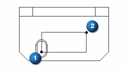
Choose Close sketch.
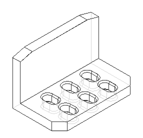
Click Finish to complete the feature.
Save the file.
Add holes to the vertical front face of the part.
Choose the Hole command.
Select the front vertical face of the bracket as shown.
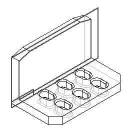
Click the Hole Options button and set the options shown and click OK.
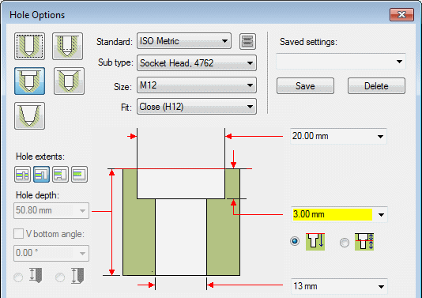
Place a hole centered over each slot. Align the holes as shown.
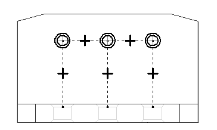
Dimension the location of the holes as shown.
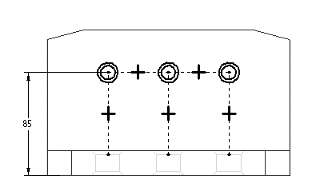
Choose Close Sketch.
Specify the extent direction shown in the illustration.
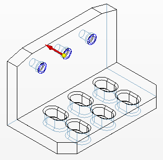
Click Finish and then click Cancel.
Save and close this file. This completes the activity.
In this activity you learned how to create a chamfer feature and a pattern consisting of more than one feature. You used the hole command to create the counterbored holes in the bracket.
-
Click the Close button in the upper-right corner of this activity window.